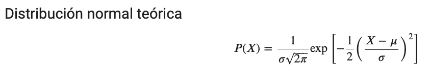

Distribuciones de Probabilidad#
Fuentes de incertidumbre en ML#
datos: Incertidumbre proveniente del margen de error que tienen los instrumentos de medicion
atributos del modelo: Son variables que representan un subconjunto reducido de toda la realidad del problema. Ademas pueden posteriormente ser mas reducidas, sesgando mas el resultado
Arquitectura del modelo: Un modelo en mates es una representación simplificada de la realidad, lo cual hace que haya incertidumbre
Distribuciones de probabilidad discretas#
Distribucion de Bernoulli#
Esta distribucion permite describir ocurrencias con variables binarias.
Ej: Lanzamiento de una moneda
La probabilidad de ocurrencia del primer evento es P
La probabilidad de ocurrencia del segundo evento es 1 - P
Distribucion Binomial#
Cuando hay secuencias repetitivas de varios eventos binarios (o eventos de bernoulli) se genera otra distribucion. Conocida como la distribucion binomial.
Ejemplo:
Dados tres lanzamientos, cual es la probabilidad de obtener dos caras?
en la imagen abajo se observa la respuesta
Se observa que el espacio muestral arroja 8 posibles resultados.
Solo en 3 de esos 8 se obtienen dos caras.
Ahora, si se quiere la probabilidad de obtener k caras dados n lanzamientos, la formula general es:
\(P(k_{caras} | n_{lanzamientos} ) = P(k,n;p)\)
es igual a:
\(P(k,n;p) = \binom{n}{k}p^{k}(1-p)^{n-k}\)
Recordar la formula de la combinatoria:
\(\binom{n}{k} = \frac{n!}{k!(n-k)!}\)
Por lo cual la formula final es:
\(P(k,n;p) = \frac{n!}{k!(n-k)!}p^{k}(1-p)^{n-k}\)
donde k es el numero de caras, n es el numero de lanzamientos y p es la probabilidad del evento (1/2 para el caso de las monedas)
Entonces, retomando el mismo calculo que se hizo previamente:
Dados tres lanzamientos, cual es la probabilidad de obtener dos caras?
Solucion:
Recordemos que la formula general para la distribucion es:
\(P(k,n;p) = \binom{n}{k}p^{k}(1-p)^{n-k}\) = \(\frac{n!}{k!(n-k)!}p^{k}(1-p)^{n-k}\)
Al reemplazar los valores, se obtiene:
=> \(P(2;3,\frac{1}{2})\) = \(\frac{3!}{2!(3-2)!}\frac{1}{2}^{2}(1-\frac{1}{2})^{3-2}\) = \((\frac{6}{2})(\frac{1}{4})(\frac{1}{2})\)
= \(\frac{3}{8}\)#
Se observa que el resultado es el mismo
Distribucion Binomial en Python#
A continuacion se explican dos llibrerias que recrean una distribucion binomial,
Scipy, que calcula las probabilidades basado en la formula general de la distribucion (entrega datos teoricos): \(P(k,n;p) = \frac{n!}{k!(n-k)!}p^{k}(1-p)^{n-k}\)
Numpy, que recrea los experimentos con funciones aleatorias (entrega datos experimentales)
Pero antes de ir con las librerias, hagamoslo manual ;)
from math import factorial
Recordando la formula de la ecuacion:
\(P(k,n;p) = \frac{n!}{k!(n-k)!}p^{k}(1-p)^{n-k}\)
Hagamos una funcion que simule esta formula:
def my_binomial(k, n, p):
return factorial(n)/(factorial(k)*factorial(n-k))*pow(p,k)*pow(1-p,n-k)
y verificamos con el ejercicio que se resolvio manualmente arriba:
my_binomial(2, 3, 0.5)
0.375
dado que \(3/8 = 0.375\), el resultado es correcto
Distribucion binomial de scipy#
Esta libreria permite construir la distribucion dado:
- un numero de intentos - la probabilidad p
Se recrea el ejercicio:
Al lanzar tres monedas.
Cual es la posibilidad de obtener dos caras?
from scipy.stats import binom
# Se define la distribucion, 3 experimentos, 0.5 probabilidad de exito
dist = binom(3, 0.5)
Para obtener la probabilidad de tener 2 exitos uso el atributo .pmf() (probability mass function)
especificando dos exitos
dist.pmf(2)
0.3750000000000001
Y se obtiene el mismo resultado \(1/8\).
Si se quiere ver la probabilidad de cada caso, podemos hacer el calculo:
values = [0,1,2,3]
probabilities=[binom(3, 0.5).pmf(k) for k in values]
print("Para ",values[0], " de 3 eventos exitosos, la probabilidad de ocurrencia es ", probabilities[0] )
print("Para ",values[1], " de 3 eventos exitosos, la probabilidad de ocurrencia es ", probabilities[1] )
print("Para ",values[2], " de 3 eventos exitosos, la probabilidad de ocurrencia es ", probabilities[2] )
print("Para ",values[3], " de 3 eventos exitosos, la probabilidad de ocurrencia es ", probabilities[3] )
Para 0 de 3 eventos exitosos, la probabilidad de ocurrencia es 0.12499999999999997
Para 1 de 3 eventos exitosos, la probabilidad de ocurrencia es 0.3750000000000001
Para 2 de 3 eventos exitosos, la probabilidad de ocurrencia es 0.3750000000000001
Para 3 de 3 eventos exitosos, la probabilidad de ocurrencia es 0.125
Se recrea otro ejercicio:
Al lanzar tres monedas.
Cual es la posibilidad de obtener DOS CARAS O MENOS?
Ahora, para obtener la probabilidad de tener 2 exitos o menos uso el atributo .cdf() (cumulative density function).
A esto tambien se le llama Distribucion de probabilidad acumulada
Solucion:
\(P(k \leq 2,n = 3, p=1/2)\)
al hacerlo manualmente, el resultado es \(7/8\)
al hacerlo en python:
# Se define la distribucion
dist = binom(3, 0.5)
# Se usa la distribucion de probabilidad acumulada .cdf(cumulative density funcion)
dist.cdf(2)
0.875
el resultado tambien es \(7/8\)
Simulando la Distribucion Binomial Con Numpy#
A continuacion se hace una simulacion de secuencias con generadores aleatorios
Se usa la funcion binomial de numpy, la cual reproduce el experimento aleatoriamente
import numpy as np
from numpy.random import binomial # Random number generator based on the binomial distribution
import matplotlib.pyplot as plt
---------------------------------------------------------------------------
ModuleNotFoundError Traceback (most recent call last)
Cell In[8], line 3
1 import numpy as np
2 from numpy.random import binomial # Random number generator based on the binomial distribution
----> 3 import matplotlib.pyplot as plt
ModuleNotFoundError: No module named 'matplotlib'
El generador aleatorio de numpy genera resultados basado en:
El numero de veces que se repite un experimento (n)
la probabilidad de exito (p)
Ejemplo:
Experimento aleatorio, con 3 intentos y 50% de probabilidad de exito en cada intento
p = 0.5
n = 3
x = binomial(n, p)
#Imprime el resultado
print(x)
# Explica el resultado
print("El resultado indica, de", n ,"intentos, obtuve", x, "exitos")
0
El resultado indica, de 3 intentos, obtuve 0 exitos
Ahora generamos una funcion que tiene que reproducir el experimento multiples veces
Analiza como se comporta a medida que el experimento se repite mas veces (n incrementa)
import seaborn as sns
import pandas as pd
def plot_binomial_seaborn(num_attempts):
values = [0,1,2,3]
attempts = []
for i in range(0, num_attempts):
attempts.append(binomial(n,p))
simulacion = np.unique(attempts, return_counts=True)[1]/len(attempts)
teorica = [binom(3, 0.5).pmf(k) for k in values]
#Data into dataframe
resultado = {"values":values*2,
"probabilities":list(simulacion)+teorica,
"categoria":["simulacion","simulacion","simulacion","simulacion",
"valor teorico","valor teorico","valor teorico","valor teorico"]
}
Experimento = pd.DataFrame(resultado)
sns.barplot(data=Experimento,x = "values", y="probabilities" ,hue="categoria")
plt.title("{} experimentos".format(num_attempts))
plt.show()
Nota: np.unique(attempts, return_counts=True) retorna una lista que contiene dos numpy arrays np.unique(attempts, return_counts=True)[0] es cada posible escenario np.unique(attempts, return_counts=True)[1] es la probabilidad de ese escenario
plot_binomial_seaborn(20)
plot_binomial_seaborn(200)
plot_binomial_seaborn(2000)
Note que a medida que n incrementa, los resultados experimentales se aproximan mas a los resultados teoricos
Distribucion Multinomial#
Es una distribucion que sigue la formula:
Distribucion de Poisson#
Para que X sea una variable aleatoria con distribucon de Poisson:
X representa el numero de veces que ocurre un evento durante un intervalo definido
La probabilidad de que un evento ocurra x veces en un invervalo de tiempo es:
\(P(X=x) = \frac{e^{-\mu}\mu^{x}}{x!}\)
con \( \mu \geq 0 \)
Ejemplo:
Un veterinario recibe en promedio \(\mu\) = 4 pacientes al dia, sabiendo que el numero de pacientes que llegan en un dia sigue una distribucion de poisson, calcula:
la probabilidad de que lleguen 3 pacientes en un dia
la probabilidad de que llegues 5 pacientes en un dia
Solucion:
Probabilidad de 3 pacientes:
\(P(X=3) = \frac{e^{-4}4^{3}}{3!} = 0.1954 = 19.54\)%
Probabilidad de 5 pacientes:
\(P(X=5) = \frac{e^{-4}4^{5}}{5!} = 0.1563 = 15.63\)%
Supuestos#
Distribucion de Poisson Scipy#
Esta libreria permite construir la distribucion dado:
- un valor \(\mu\) Que representa la ocurrencia del evento en el intervalo
Se recrea el ejercicio del veterinario:
en promedio llegan 4 perros en un dia, Cual es la posibilidad de que lleguen 3 perros en un dia?
Para obtener la probabilidad de tener 3 ocurrencias uso el atributo .pmf() (probability mass function)
from scipy.stats import poisson
# Se define la distribucion con lambda = 4
dist = poisson(4)
# Probabilidad de 3
dist.pmf(3)
0.1953668148131645
Se recrea otro ejercicio:
en promedio llegan 4 perros en un dia, cual es la probabilidad de que lleguen hasta 3 perros en un dia?
Ahora, para obtener la probabilidad de tener 3 eventos o menos, uso el atributo .cdf() (cumulative density function).
A esto tambien se le llama Distribucion de probabilidad acumulada
dist.cdf(3)
0.43347012036670896
Recuerda que la probabilidad de hasta 3 es la suma de las probabilidades de 0,1,2,3
dist.pmf(0)+dist.pmf(1)+dist.pmf(2)+dist.pmf(3)
0.43347012036670884
Simulando la Distribucion de Poisson con Numpy#
La funcion poisson de np.random genera experimentos aleatorios con distribucion de Poisson.
los parametros son el lambda y el tamano de la muestra
import numpy as np
from numpy.random import poisson # Random number generator based on the poisson distribution
import matplotlib.pyplot as plt
# Parametros son el lambda y el tamano de la distribucion
def plot_poisson_seaborn(average, sample_size):
poissondist = np.random.poisson(average, sample_size)
xvalues = np.unique(poissondist, return_counts=True)[0]
simulacion = np.unique(poissondist, return_counts=True)[1]/len(poissondist)
teorica = [scipy.stats.poisson(average).pmf(k) for k in xvalues]
fig, axes = plt.subplots(nrows=1,ncols=2, figsize=(9,6))
fig.suptitle('Simulacion Dist. Poisson, n={}'.format(sample_size))
fig.tight_layout()
axes[0].bar(xvalues, simulacion)
axes[0].set_title("Resultado Experimental, Lambda = {}".format(average))
axes[0].set_xticks(xvalues)
axes[1].bar(xvalues, teorica)
axes[1].set_title("Resultado Teorico, Lambda = {}".format(average))
axes[1].set_xticks(xvalues)
plt.show()
plot_poisson_seaborn(4, 100)
plot_poisson_seaborn(4, 1000)
plot_poisson_seaborn(4, 1000000)
Distribucion Geometrica#
Distribucion Hipergeometrica#
Distribucion Binomial negativa#
Distribuciones de probabilidad continua#
Distribucion Normal (Gaussiana)#
import numpy as np
import matplotlib.pyplot as plt
def gaussian(x, mu, sigma):
return 1/(sigma*np.sqrt(2*np.pi))*np.exp(-0.5*pow((x-mu)/sigma,2))
# Se define un eje X
x = np.arange(-4,4,0.1)
# Se define una distribucion normal con media=0 y desv=1
y = gaussian(x, 0.0, 1)
# Se grafica
plt.plot(x,y)
[<matplotlib.lines.Line2D at 0x7fe95160cca0>]

Distribucion normal de scipy#
from scipy.stats import norm
import numpy as np
import matplotlib.pyplot as plt
dist_norm = norm(0,1)
x = np.arange(-4,4,0.1)
y = [dist_norm.pdf(value) for value in x]
plt.plot(x,y)
[<matplotlib.lines.Line2D at 0x7fe93e071fa0>]
dist_norm = norm(0,1)
x = np.arange(-4,4,0.1)
y = [dist_norm.cdf(value) for value in x]
plt.plot(x,y)
[<matplotlib.lines.Line2D at 0x7fe93dda29a0>]
import pandas as pd
df = pd.read_excel("s057.xls")
df
| Normally Distributed Housefly Wing Lengths | Unnamed: 1 | Unnamed: 2 | Unnamed: 3 | |
|---|---|---|---|---|
| 0 | Sokal, R.R., and P.E.Hunter. 1955. | NaN | NaN | NaN |
| 1 | NaN | NaN | NaN | NaN |
| 2 | length (x.1mm) | NaN | NaN | NaN |
| 3 | 36 | NaN | Bin | Frequency |
| 4 | 37 | NaN | 36-38 | 2 |
| ... | ... | ... | ... | ... |
| 98 | 52 | NaN | NaN | NaN |
| 99 | 53 | NaN | NaN | NaN |
| 100 | 53 | NaN | NaN | NaN |
| 101 | 54 | NaN | NaN | NaN |
| 102 | 55 | NaN | NaN | NaN |
103 rows 4 columns
La informacion relevate esta contenida en la columna Normally Distributed Housefly Wing Lengths
wingdata = df["Normally Distributed Housefly Wing Lengths"].values[4:]
Ahora, calculemos la probabilidad de cada uno de estos datos
values, dist = np.unique(wingdata, return_counts=True)
plt.bar(values, (dist/len(wingdata)))
<BarContainer object of 19 artists>
Estimacion de la distribucion
mu = wingdata.mean()
sigma = wingdata.std()
x = np.arange(30, 60, 0.1)
dist = norm (mu, sigma)
y = [dist.pdf(value) for value in x]
plt.plot(x, y)
values, dist = np.unique(wingdata, return_counts=True)
plt.bar(values, dist/len(wingdata))
<BarContainer object of 19 artists>
Distribucion Exponencial#
Distribucion Paretto#
Distribucion Gamma#
Distribucion Beta#
Como estimar una distribucion de probabilidad?#
import numpy as np
import matplotlib.pyplot as plt
from numpy.random import normal
from scipy.stats import norm
sample = normal(size=10000)
plt.hist(sample, bins=30)
plt.show()
Estimacion parametrica#
Paso 1. Se genera una muestra aleatoria con distribucion normal
Esto se hace con numpy.random.normal
En este caso la distribucion tiene media = 50 y desviacion = 5
# Distrib normal con mu = 50, sigma = 5
sample = normal(loc=50, scale=5, size = 1000)
plt.hist(sample, bins=30)
plt.show()
Entonces supongamos que tenemos un conjunto de datos cuya distribucion y parametros no conocemos
Paso 2. una vez se tienen los datos simulados, se procede a ajustar una funcion con sus parametros
# calcular parametros de la muestra
mu = sample.mean()
sigma= sample.std()
#generar una distribucion normal con los parametros calculados
dist = norm(mu, sigma)
# Y se obtienen las probabilidades de cada dato
values = np.arange(30,70,1)
probabilidades = [dist.pdf(i) for i in values]
Por ultimo se grafican los datos originales y la distribucion calculada para ver si se ajusta correctamente
# Density = True hace que el grafico muestre probabilidades en lugar de frecuencias
plt.hist(sample, bins = 30, density = True)
plt.plot(values, probabilidades)
plt.show()
Estimacion no parametrica#
Este proceso se aplica cuando los datos no se ajustan a una distribución conocida, Por lo cual no se pueden forzar a los datos a ajustarse a una unica distribucion
Se genera aleatoriamente un dataset con distribucion bimodal
import numpy as np
sample1 = normal(loc=20, scale=5, size=300)
sample2 = normal(loc=40, scale=5, size=700)
sample = np.hstack((sample1, sample2))
plt.hist(sample, bins = 30, density = True)
plt.show()
Se aplica el metodo de Kernel Density Estimation(KDE)
*una vez se tienen los datos simulados, comienza el proceso de estimación:
1. Se crea un objeto modelo, con parámetros bandwidth= (parámetro de suavizado) y kernel= (funciones de distribución que se usan para la estimación).
2. Una vez creado el objeto, se ajustan los datos a las necesidades del objeto, para esto se utiliza el método reshape, para ordenar en una matriz de 1000 filas y 1 columna y luego se ajusta el modelo a estos datos:
from sklearn.neighbors import KernelDensity
model = KernelDensity(bandwidth=2, kernel="gaussian")
sample = sample.reshape((len(sample),1))
model.fit(sample)
KernelDensity(bandwidth=2)In a Jupyter environment, please rerun this cell to show the HTML representation or trust the notebook.
On GitHub, the HTML representation is unable to render, please try loading this page with nbviewer.org.
KernelDensity(bandwidth=2)
Ahora se ajusta el modelo (o la distribucion que queremos predecir) a los datos, como si se estuviese calculando la media y la desviacion estandar de una distribución normal, pero nos faltan calcular los promedios de cada Kernel para darle forma a la función teórica. Esto es lo que hacemos a continuación:
se crea un eje x en el rango obetenido, luego calculamos las probabilidades.
Aclaración: la probabilidad sale en forma logarítimica(por cuestiones de eficiencia), Luego a través de función exponencial se revierte este efecto.
values = np.arange(1,60,1)
values = values.reshape((len(values), 1))
probabilities = model.score_samples(values) # probabilidad logaritmica (computacionalmente mas barato)
probabilities = np.exp(probabilities) # se regresa a las probabilidades originales
# Datos originales
plt.hist(sample, bins=50, density=True)
#Curva ajustada
plt.plot(values, probabilities)
plt.show()
Maximum Likelihood Estimation (MLE)#
from mpl_toolkits.mplot3d import Axes3D
import matplotlib.pyplot as plt
from matplotlib import cm
import numpy as np
import pandas as pd
Escoger una distribucion
Escoger los parametros de la distribucion
def likelihood(y, yp):
return yp*y+(1-yp)*(1-y)
fig = plt.figure()
#ax = fig.gca(projection="3d")
ax = fig.add_subplot(projection='3d')
Y = np.arange(0,1,0.01)
YP = np.arange(0,1,0.01)
Y, YP = np.meshgrid(Y, YP)
Z = likelihood(Y, YP)
surf = ax.plot_surface(Y, YP,Z, cmap = cm.coolwarm)
fig.colorbar(surf, shrink = 0.5, aspect = 5)
plt.show()
from sklearn.datasets import load_iris
from sklearn.linear_model import LogisticRegression
atrib_names = ["sepal length", "sepal width", "petal length", "petal width"]
X, y = load_iris(return_X_y=True)
X[:2]
array([[5.1, 3.5, 1.4, 0.2],
[4.9, 3. , 1.4, 0.2]])
y
array([0, 0, 0, 0, 0, 0, 0, 0, 0, 0, 0, 0, 0, 0, 0, 0, 0, 0, 0, 0, 0, 0,
0, 0, 0, 0, 0, 0, 0, 0, 0, 0, 0, 0, 0, 0, 0, 0, 0, 0, 0, 0, 0, 0,
0, 0, 0, 0, 0, 0, 1, 1, 1, 1, 1, 1, 1, 1, 1, 1, 1, 1, 1, 1, 1, 1,
1, 1, 1, 1, 1, 1, 1, 1, 1, 1, 1, 1, 1, 1, 1, 1, 1, 1, 1, 1, 1, 1,
1, 1, 1, 1, 1, 1, 1, 1, 1, 1, 1, 1, 2, 2, 2, 2, 2, 2, 2, 2, 2, 2,
2, 2, 2, 2, 2, 2, 2, 2, 2, 2, 2, 2, 2, 2, 2, 2, 2, 2, 2, 2, 2, 2,
2, 2, 2, 2, 2, 2, 2, 2, 2, 2, 2, 2, 2, 2, 2, 2, 2, 2])
clf = LogisticRegression(random_state=10, solver="liblinear").fit(X[:100], y[:100])
Revisamos los parametros resultantes \(\beta_{1}\)
clf.coef_
array([[-0.40247392, -1.46382925, 2.23785648, 1.00009294]])
![Created in deepnote.com]() Created in Deepnote
Created in Deepnote